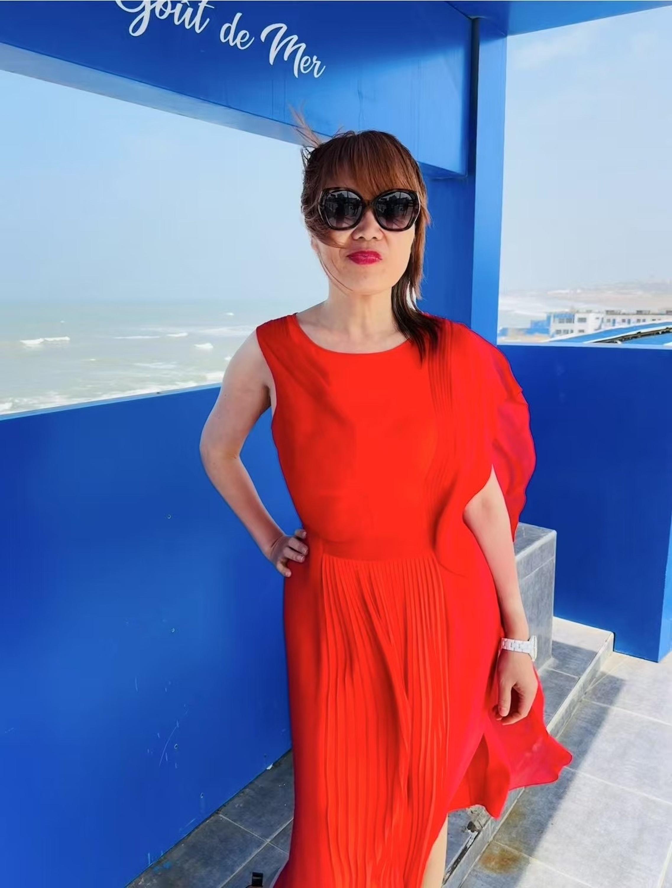

- Desert Invocation
Liberation is both landscape and posture. In the golden desert light, she dissolves into the moment — arms raised not in surrender, but signal

- Fountain of Lineage
Draped in red before a mosaic of memory, she is both pattern and contrast. Style becomes ceremony — rooted, radiant, and utterly intentional.

- Fountain of Lineage
Bold in scarlet, poised against ocean blue — where presence is not performance but power. A quiet defiance beneath coastal light.